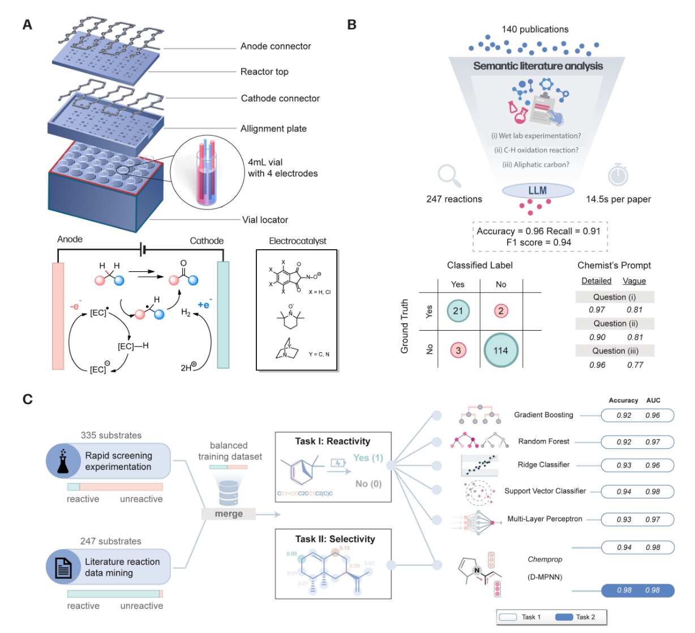
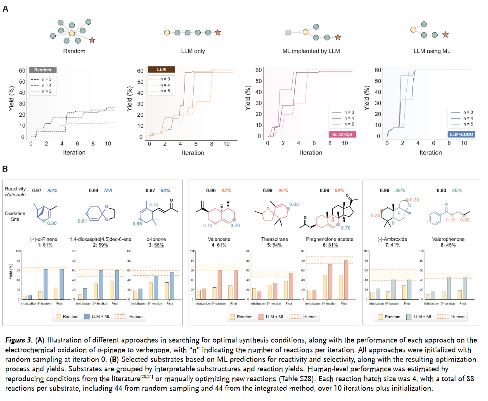
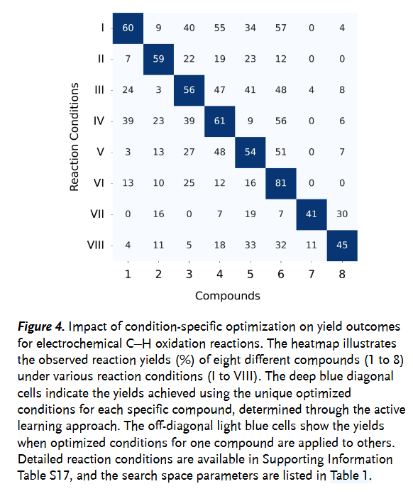
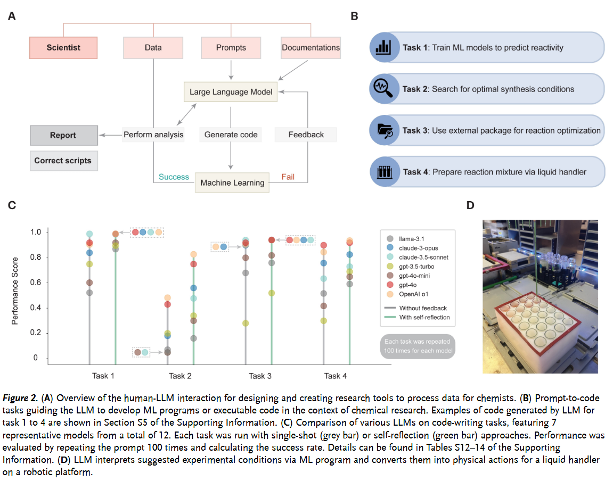

摘要：电化学C-H键氧化反应为碳氢化合物的官能团化提供了可持续路径，然而底物筛选与合成条件优化仍存在重大挑战。本研究开发了一种融合机器学习与大语言模型的集成策略，用于高效探索电化学C-H氧化反应体系。通过搭建批量快速筛选电化学平台，我们系统评估了多种反应体系，首先基于反应活性对底物进行分类，同时利用大语言模型对文献数据进行文本挖掘以扩充训练集。所构建的反应活性预测机器学习模型准确率超过90%，实现了对大量商业化分子的虚拟筛选。针对优选底物，通过提示大语言模型生成迭代优化代码，成功提升了目标产物的收率。这种人机协作模式成效显著，高效确定了8种药物分子或其关键中间体的高收率反应条件。值得注意的是，我们系统评估了12种大语言模型（包括LLaMA系列、Claude系列、OpenAI o1和GPT-4等）在代码生成与基于自然语言指令的机器学习函数调用方面的准确性，揭示了其在加速化学研究的四大类任务中的应用潜力。此外，本研究还建立了包含1071组反应条件与收率的电化学C-H氧化反应实验基准数据集。
电化学C-H氧化作为一种绿色、原子经济的有机合成方法，为将廉价易得的碳氢化合物直接转化为高附加值的含氧官能团分子提供了极具吸引力的途径。然而，尽管其潜力巨大，该领域的发展仍面临两大瓶颈：一是如何在广阔的化学空间中快速识别出适用于特定氧化反应的底物；二是如何高效地优化复杂的反应条件以获得理想的产率和选择性。传统的依赖大量试错实验和化学家经验直觉的方法，不仅耗时耗力，且往往难以系统性地探索整个反应空间。近年来，机器学习（ML）在化学反应预测与优化以及大型语言模型（LLM）在辅助科研流程方面都展现了巨大潜力。那么，能否将二者结合，创造出更智能、更高效的电化学反应探索新范式？一篇发表在Angewandte Chemie International Edition上的研究对此问题进行了深入探索，提出并验证了一个整合ML与LLM的协同工作流程，旨在显著加速电化学C-H氧化反应的发现与优化进程。
背景：电化学C-H氧化的机遇与传统方法的挑战
直接对惰性C-H键进行选择性氧化官能化，是合成化学中的“圣杯”之一。电化学方法因其条件温和、无需昂贵或有毒的化学氧化剂、可通过电极电位精确调控反应性等优点，被视为实现这一目标的可持续途径。然而，C-H键的普遍存在和相似的键能使得选择性活化特定位点极具挑战性。同时，电化学反应受多种因素影响（电极材料、电解质、溶剂、电流/电压、添加剂等），参数空间巨大，寻找最优条件如同大海捞针。
虽然机器学习已开始应用于预测反应结果，但其性能高度依赖于训练数据的质量和数量。而化学文献中往往充斥着成功的“亮眼”数据，缺乏失败案例或低产率数据，导致模型训练存在偏差。另一方面，LLM强大的自然语言理解能力使其有望从海量文献中挖掘信息，甚至理解复杂的化学概念，但其本身缺乏进行严谨定量预测和遵循物理化学规律的能力。因此，如何有效结合ML的预测能力和LLM的知识整合与交互能力，是加速该领域发展的关键。该研究正是在这一背景下，试图回答：LLM在合成电化学中的能力边界何在？如何将LLM与ML有效整合以可靠地加速反应发现？
集成框架：ML预测、LLM辅助、实验验证的协同工作流
该研究的核心贡献在于设计并实现了一个多环节、闭环的集成工作流程，巧妙地融合了高通量实验、LLM和ML技术：
1. 数据基础：快速筛选平台与LLM文献挖掘
高质量、均衡的数据是AI模型成功的基石。为了克服文献数据偏倚（倾向于成功案例）和实验数据匮乏的问题，研究者双管齐下：
- 自建快速筛选电化学平台[Fig. 1A]：借鉴已有平台，设计并搭建了一个低成本、标准化的24孔板电合成反应器。该平台能够同时进行多个反应，实现了对335种市售化合物在预定条件下的快速反应性筛选，高效地生成了包含成功（正样本）和失败（负样本）案例的初始实验数据集。这对于训练鲁棒的ML预测模型至关重要。
- LLM辅助文献数据挖掘[Fig. 1B]：利用LLM强大的语义分析能力，根据研究人员设定的精确标准（实验研究、C(sp³)-H氧化成醇/酮、脂肪碳反应）自动筛选海量科学文献。LLM充当了一个高效的“定制过滤器”，在约35分钟内分析了140篇相关论文，准确率高达96%，并能为其决策提供基于原文的理由。通过这种方式，从文献中补充了247种底物的497个反应数据，极大地增强（augment）了训练数据集的多样性。研究还发现，详细具体的提示（prompt）对于引导LLM准确执行语义分析任务至关重要。

图1. （A）24孔电化学平台的设计组装示意图及电催化剂催化C(sp3)-H键电化学氧化过程的反应原理图示。（B）基于语言模型的语义文献分析流程：通过自然语言提示进行反应数据挖掘，通过对比人工标注真实值与语言模型标注结果评估性能，并考察提示词质量对分析效果的影响。（C）训练数据准备与机器学习模型概览：针对电化学C-H键氧化反应性预测（任务1）与选择性预测（任务2），评估不同架构模型的准确率与AUC指标。
2. 机器学习驱动的预测与筛选
基于整合后的均衡数据集（共582种底物），研究者训练了两类ML模型[Fig. 1C]：
- 反应性预测模型：用于判断一个底物是否能在给定条件下发生C-H氧化（二元分类）。多种模型（如随机森林、支持向量机、多层感知机、Chemprop等）均取得了优异性能（准确率 > 91.7%, AUC > 97.2%）。这些模型随后被用于对大型化合物库进行虚拟筛选，快速锁定潜在的活性底物。
- 选择性预测模型：利用具有可解释性的Chemprop模型，预测分子中哪些C-H键更容易被氧化。尽管原子级别数据高度不平衡，模型仍表现出很强的区分能力（ROC-AUC=98.1%），为理解反应位点选择性提供了原子级别的洞察。
3. LLM驱动的反应优化：从“化学直觉”到“ML+LLM协同”
筛选出活性底物后，下一步是优化反应条件以最大化产率。研究团队在此环节探索了LLM的更深层次应用，并对比了四种优化策略[Fig. 3A]：
- 随机采样：模拟传统试错，效率低下，产率停滞在低水平（~20%）。
- 纯LLM驱动预测：LLM基于通用化学知识和趋势进行“有根据的猜测”，但缺乏统计学习基础，优化效率有限。
- 纯ML驱动优化（BO）：利用贝叶斯优化进行参数选择，效果较好，但其实现代码本身可能对化学家构成门槛。
- 混合LLM-ML协同方法：这是本研究的关键创新。LLM首先基于其知识（可能来自文献挖掘或预训练）提供一个有信息的初始搜索空间，然后利用LLM生成代码来调用ML优化程序（如EDBO，一种贝叶斯优化包）进行迭代优化。在这个模式下，LLM的角色从“猜测者”转变为“协调者”和“工具使用者”，它依赖ML模型的输出来做出更明智的决策。

结果表明，混合LLM-ML方法效果最佳，能够快速有效地将α-蒎烯的氧化产率提升至60%以上。该方法随后被成功应用于另外7种结构多样、包含类药分子的底物[Fig. 3B]，均能在10次迭代内（每次迭代包含4个实验）从1250种可能的条件组合中找到高产率条件，其优化结果与人类专家水平相当，甚至发现了一些非传统直觉驱动的新优化条件组合。研究还发现，最优条件具有显著的底物特异性[Fig. 4]，进一步凸显了自动化、定制化优化流程的必要性。

LLM能力基准测试：可靠的代码助手？

为了量化LLM在辅助化学研究中的实际能力，研究团队进行了一项重要的附加工作：对12种不同的LLM（涵盖开源和闭源模型）在执行化学相关编程任务方面的性能进行了严格的基准测试[Fig. 2]。测试任务包括：
- 基于化学数据集训练ML模型。
- 编写优化合成条件的代码。
- 理解文档并使用外部Python包进行产率优化。
- 生成控制液体处理机器人执行实验操作的代码。
通过100次独立重复测试和自动化的代码评估器，研究发现：
- LLM在训练ML模型等相对标准化的任务上表现出高能力（准确率>90%）。
- 更先进的LLM（如OpenAI的o1和GPT-4o）在处理复杂的优化代码生成和应用新工具方面展现出强大的适应性和推理能力。
- LLM能够成功生成用于实验室自动化的代码，有效连接数字与物理世界。
- 引入“自我反思”机制（让LLM根据错误信息修改代码）能显著提高所有模型生成代码的质量，减少幻觉。
这项基准测试为化学界选择和使用LLM作为“代码助手”提供了宝贵的量化参考，并证明了LLM在自动化化学研究流程方面的潜力。
表1：LLM在集成框架中的多重角色
| LLM扮演的角色 | 具体任务示例 | 实现方式/关键技术 | 价值与贡献 |
|---|---|---|---|
| 数据工作者 (Tool) | 从海量文献中筛选符合特定标准的电化学C-H氧化反应研究 | 语义分析、自然语言理解、基于人类指令的过滤 | 克服文献数据偏倚，快速构建更均衡、多样化的训练数据集 |
| 工具创造者 (Creator) | 自动生成Python代码用于： (1) 训练ML反应性/选择性模型； (2) 实现贝叶斯优化算法等 | 代码生成能力、理解ML框架、根据自然语言需求编写逻辑 | 显著降低化学家使用ML和复杂优化算法的门槛，加速计算工具的部署与应用 |
| 工具使用者 (User) | (1) 调用ML模型进行预测； (2) 调用外部优化包（如EDBO）； (3) 通过函数调用控制硬件 | 指令遵循、函数调用（Function Calling）、API交互 | 实现自动化工作流程，将预测、优化与实验操作（如液体处理）连接起来，提高研究效率和自主性 |
| 推理与决策者 (Limited) | 在纯LLM驱动优化中基于化学知识进行“有根据的猜测”； 在混合模式中基于ML结果决策 | 内部知识推理、上下文理解 | 提供初始探索方向； 在协同模式下做出更数据驱动的决策（相比纯猜测） |
4. 总结与展望：人机协同，加速探索
该研究成功展示了一个整合机器学习和大型语言模型的协同框架，能够有效加速电化学C-H氧化反应的探索与优化。通过结合快速实验筛选、LLM驱动的文献挖掘与数据增强、ML驱动的反应性/选择性预测，以及LLM辅助代码生成驱动的主动学习优化，研究团队不仅开发了高性能的预测模型，还为多个具有应用价值的底物找到了高产率的合成条件，并构建了一个包含上千条反应数据的宝贵数据集。
这项工作的核心价值在于揭示了LLM在现代化学研究中扮演多重角色的潜力：它可以是处理信息的工具，可以是创造新工具（代码）的引擎，还可以是调用和协调其他工具（ML模型、硬件）的智能代理。研究结果清晰地表明，将LLM的语言理解、知识整合和代码生成能力与ML的定量预测和优化能力相结合，并由精准的人类指令或实验反馈进行引导，能够形成强大的人工智能驱动力，有效克服传统研究方法的瓶颈。
这项研究为我们呈现了一个将机器学习和大型语言模型深度融合应用于电化学反应探索的实用范例。它清晰地展示了如何通过整合高通量实验、LLM辅助的数据处理与代码生成、以及机器学习预测与优化，构建一个高效、智能的研究工作流程。其成功不仅体现在对特定反应（电化学C-H氧化）的高效优化上，更在于其揭示的LLM作为“元工具”和“智能助手”在降低计算工具使用门槛、自动化研究流程方面的巨大潜力，以及人-AI协作模式在解决复杂化学问题中的价值。同时，该研究对多种LLM在化学相关编程任务上的定量基准测试，也为领域内选择和评估AI工具提供了重要参考。
当然，研究也指出了未来的方向，包括构建更复杂的人-AI交互框架、加强与更多数字化工具的连接、以及应对文献数据稀缺和偏倚等持续存在的挑战。尽管如此，这项工作无疑为我们描绘了AI技术，特别是LLM与ML的协同，如何能够加速化学合成研究的步伐，并为发现更绿色、更高效的化学转化过程贡献力量。它预示着一个数据驱动、智能辅助的化学研究新时代的到来，在这个时代，人类的创造力与人工智能的效率将更紧密地结合在一起。